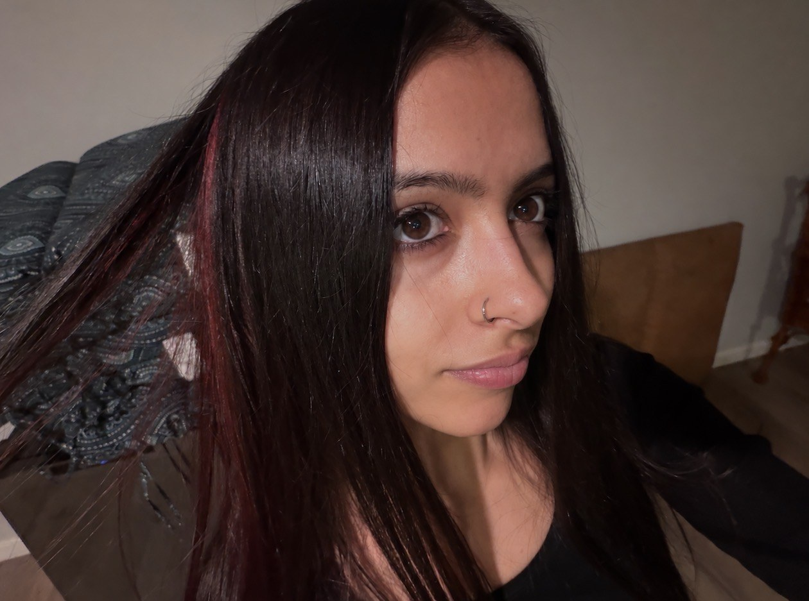
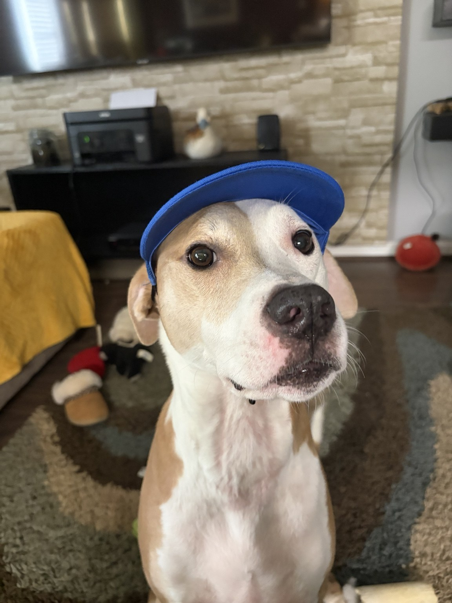
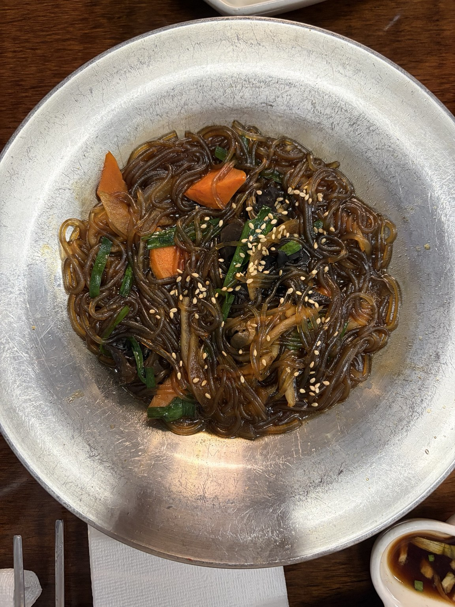
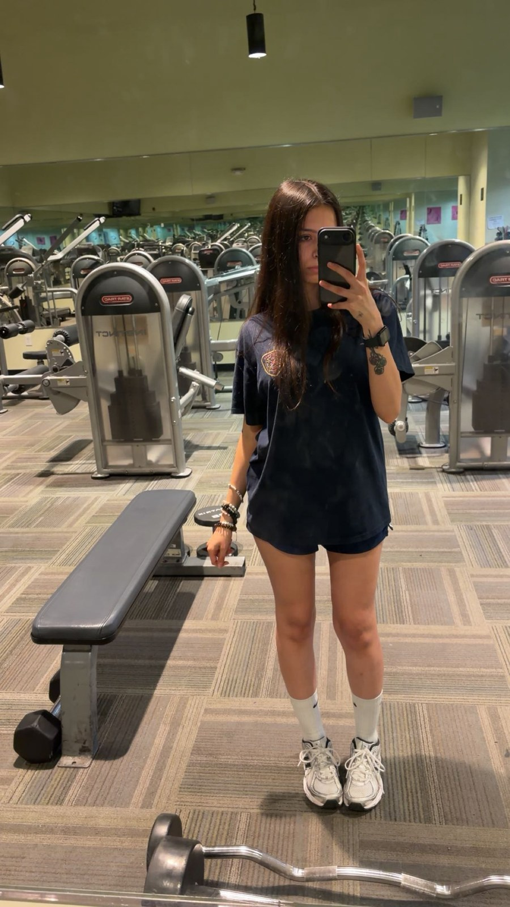
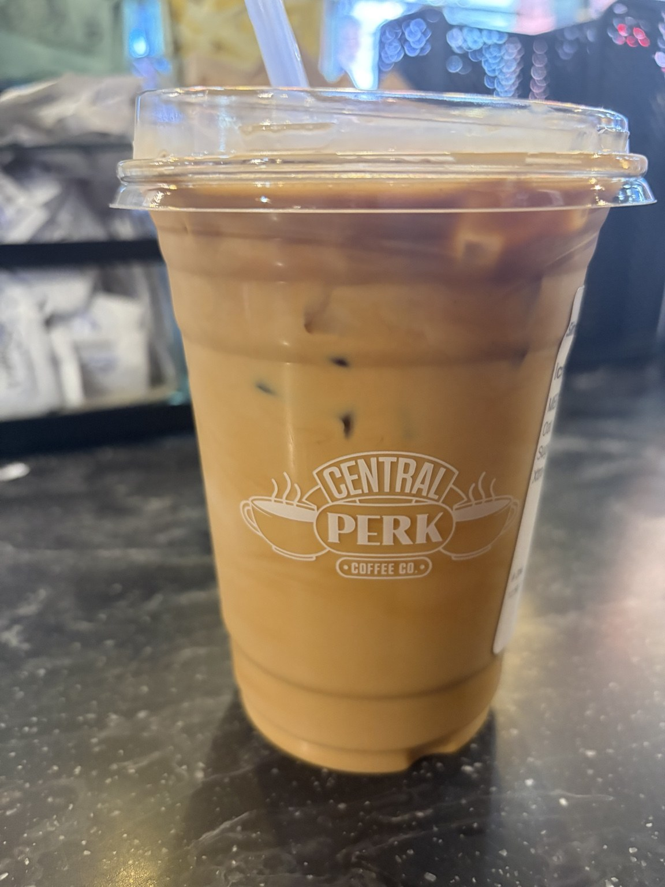

ABOUT ME
Curious mind.
Creative side.

I like understanding how things work—and finding ways to make them better.
I’m a Louisville-based software engineering analyst and senior web specialist at UPS. I work across interfaces, backend logic, databases, and secure integrations to keep enterprise applications useful and reliable.
I’m especially proud of my continued work on the Air Dangerous Goods website: modernizing legacy user workflows, integrating Microsoft Graph API, improving secure configuration, and redesigning pages with usability in mind.
I love the creative side of development as much as the technical side. A clearer layout or a more intuitive flow can be just as satisfying as solving a stubborn backend issue.
I’m knowledgeable in AI tool usage and GitHub. I’m interested in practical ways to use these tools to support development, learning, and creative work.
I graduated summa cum laude from the University of Louisville in 2025 with a B.S.B.A. in Computer Information Systems, Cyber Security Track.
BEYOND THE KEYBOARD
A little more me.
The things I enjoy outside work.




My favorite show? The Vampire Diaries.